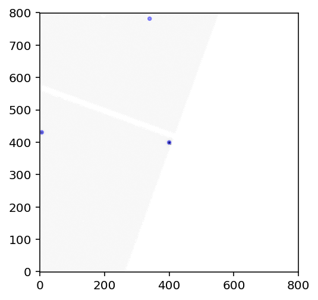
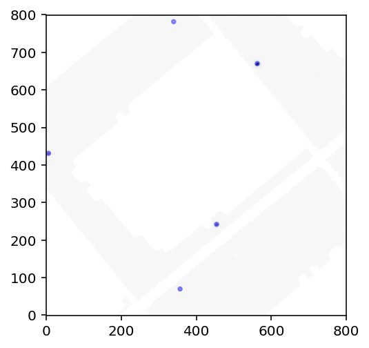
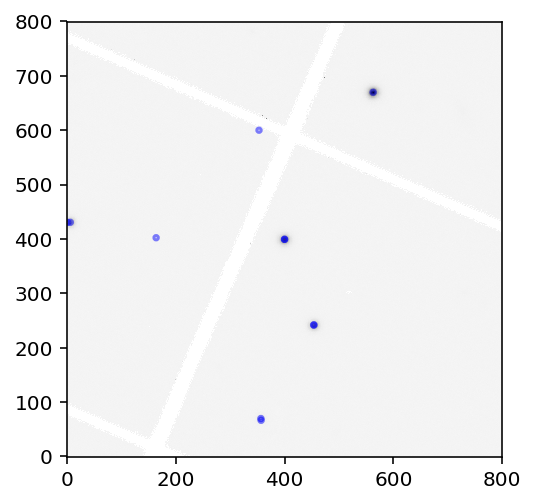
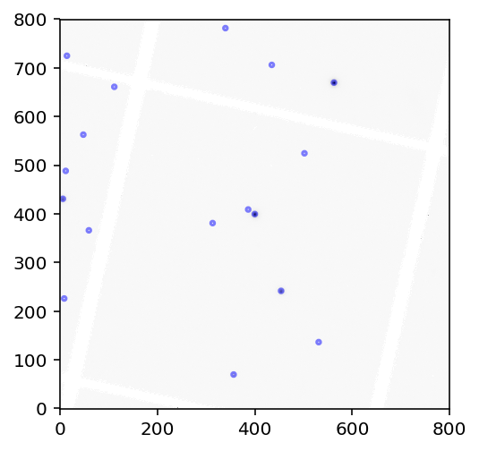

Retrieving Pan-STARRS data for Campaign 16¶
In this tutorial we show how to derive photometry from Pan-STARRS for K2 targets in C16.
First, let’s pick a target. We’ll want a relatively isolated target with a photometric amplitude large enough to measure from the ground.
In [1]:
from lightkurve import KeplerTargetPixelFile
In [2]:
tpf = KeplerTargetPixelFile.from_archive(211691793, campaign=16)
In [3]:
import pandas as pd
import numpy as np
import matplotlib.pyplot as plt
%matplotlib inline
%config InlineBackend.figure_format = 'retina'
import os, warnings
from astropy.io import fits
from astropy.table import Table
from tqdm import tqdm_notebook as tqdm
import astropy.units as u
In [4]:
tpf.plot()
Out[4]:
<matplotlib.axes._subplots.AxesSubplot at 0x1c1ed39940>
Looks decently isolated, and faint enough to be unsaturated in Pan-STARRS.
In [5]:
lc = tpf.to_lightcurve(aperture_mask='all')
lc.scatter()
plt.xlim(3290, 3300)
Out[5]:
(3290, 3300)
In [6]:
pg = lc.to_periodogram(period=np.arange(0.5, 0.6, 0.00001))
You have passed an evenly-spaced grid of periods. These are not evenly spaced in frequency space.
Method has been set to 'slow' to allow for this.
In [7]:
pg.plot(format='period')
plt.xlim(0, 1)
plt.yscale('linear')
It looks like the period hovers just short of 0.6 days.
In [8]:
pg.properties()
lightkurve.Periodogram properties:
Attribute Description Units
---------------------- ---------------- ------
targetid 211691793
label EPIC 211691793
frequency_at_max_power 1.8411 1 / d
max_power 19404210302.0156 d ppm2
nyquist 24.4672 1 / d
period_at_max_power 0.5432 d
frequency array (10000,) 1 / d
period array (10000,) d
power array (10000,) d ppm2
meta <class 'dict'>
In [9]:
p_var = pg.period_at_max_power
p_var
Out[9]:
$0.54316 \; \mathrm{d}$
In [10]:
p_var.to(u.hour)
Out[10]:
$13.03584 \; \mathrm{h}$
The star has a 13 hour period, with a huge amplitude. Let’s phase fold the star on this period.
In [11]:
lc.fold(p_var.value).scatter()
Out[11]:
<matplotlib.axes._subplots.AxesSubplot at 0x1c23063160>
Nice! Let’s see if we can get the contemporaneous Pan-STARRS data for this source. We will follow the instructions from the MAST-provided K2SNE demo.
In [12]:
def getimages(ra,dec,size=240,filters="griz",auxiliary="data,mask"):
"""Query hlspfilenames.py service to get a list of images
ra, dec = position in degrees
size = image size in pixels (0.25 arcsec/pixel)
Returns a table with the results
"""
service = "https://ps1images.stsci.edu/cgi-bin/hlspfilenames.py"
url = ("{service}?ra={ra}&dec={dec}&size={size}&format=fits"
"&auxiliary={auxiliary}&filters={filters}").format(**locals())
table = Table.read(url, format='ascii')
return table
In [13]:
ra0 = tpf.ra
dec0 = tpf.dec
table = getimages(ra0,dec0,size=800)
print('Found', len(table), 'images')
Downloading https://ps1images.stsci.edu/cgi-bin/hlspfilenames.py?ra=134.54298&dec=15.805218&size=800&format=fits&auxiliary=data,mask&filters=griz [Done]
Found 126 images
In [14]:
def stackimages(imagelist, masklist):
"""Read FITS images from URLs and stack them
imagelist is list of rows (from getimages) for the data
masklist is corresponding list of rows for the stacks
Returns stacked image, count of exposures in stack
"""
n = len(imagelist)
# assume all images are the same size
im0 = fits.open(imagelist[0])[0].data
mask0 = fits.open(masklist[0])[0].data
# mask ought to be int but is float for some reason
mask0[np.isnan(mask0)] = 0
mask0 = mask0.astype(np.int32)
imstack = np.zeros((n,im0.shape[0],im0.shape[1]), dtype=im0.dtype)
imstack[0] = im0
maskstack = np.zeros((n,im0.shape[0],im0.shape[1]), dtype=mask0.dtype)
maskstack[0] = mask0
for i in range(1,n):
imstack[i] = fits.open(imagelist[i])[0].data
mask0 = fits.open(masklist[i])[0].data
mask0[np.isnan(mask0)] = 0
maskstack[i] = mask0.astype(np.int32)
# ignore all non-zero mask values in stack (conservative)
imstack[maskstack != 0] = np.nan
# suppress the annoying nanmean warning where all pixels are blank
with warnings.catch_warnings():
warnings.simplefilter("ignore", category=RuntimeWarning)
im = np.nanmean(imstack,axis=0)
count = np.isfinite(imstack).sum(axis=0)
return im, count
In [15]:
imagelist = list(table['url'][(table['filter'] == 'g') & (table['type'] == 'warp')])
masklist = list(table['url'][(table['filter'] == 'g') & (table['type'] == 'warp.mask')])
im, count = stackimages(imagelist, masklist)
In [17]:
plt.imshow(np.arcsinh(im/10), cmap='hot', origin='lower')
Out[17]:
<matplotlib.image.AxesImage at 0x1c23ba8898>
In [20]:
table = table[table['type'] == 'warp']
Let’s simplify the table to the essentials.
In [21]:
from astropy.stats import sigma_clipped_stats
from photutils import datasets
from photutils import DAOStarFinder
import matplotlib.pyplot as plt
from astropy.visualization import SqrtStretch
from astropy.visualization.mpl_normalize import ImageNormalize
from photutils import CircularAperture
In [22]:
def get_all_phot(dat_array, show_im=False):
'''get aperture photometry given a 2D array with one star in it.'''
mean, median, std = sigma_clipped_stats(dat_array, sigma=3.0, iters=5)
#print((mean, median, std))
daofind = DAOStarFinder(fwhm=3.0, threshold=5.*std)
sources = daofind(dat_array - median)
for col in sources.colnames:
sources[col].info.format = '%.8g' # for consistent table output
#print(sources)
positions = (sources['xcentroid'], sources['ycentroid'])
apertures = CircularAperture(positions, r=4.)
norm = ImageNormalize(stretch=SqrtStretch())
if show_im:
plt.imshow(dat_array, cmap='Greys', origin='lower', norm=norm)
apertures.plot(color='blue', lw=1.5, alpha=0.5)
return sources
In [23]:
all_sources = get_all_phot(im)
In [24]:
all_sources.sort('flux')
top5 = all_sources[::-1][0:5]
In [25]:
df = table.to_pandas()
df = df[['filter', 'mjd', 'type','url']]
Hopefully some of the data gets cached automatically, otherwise this step takes a few minutes.
In [26]:
def get_flux_from_source(source_table, xc=125, yc=125):
'''returns the flux of the target star given a source table'''
#find the right source
rr = np.sqrt((source_table['xcentroid']-xc)**2 +
(source_table['ycentroid']-yc)**2)
ii = np.argmin(rr)
if (rr[ii] < 3.0):
flux = source_table['flux'][ii]
else:
flux = 0
return flux
In [27]:
top5
Out[27]:
Table length=5
| id | xcentroid | ycentroid | sharpness | roundness1 | roundness2 | npix | sky | peak | flux | mag |
|---|---|---|---|---|---|---|---|---|---|---|
| int64 | float64 | float64 | float64 | float64 | float64 | int64 | float64 | float64 | float64 | float64 |
| 29 | 399.99934 | 399.25361 | 0.42477707 | 0.19929983 | -0.18272573 | 25 | 0 | 15677.406 | 698.60399 | -7.1105777 |
| 39 | 562.52035 | 669.83479 | 0.46508474 | 0.21110478 | -0.10210576 | 25 | 0 | 15633.353 | 615.27036 | -6.972665 |
| 15 | 454.06672 | 241.56619 | 0.41806313 | 0.097299524 | 0.036887135 | 25 | 0 | 7897.6196 | 409.76226 | -6.5313299 |
| 30 | 5.7017992 | 430.7946 | 0.41947153 | 0.16181759 | 0.030239286 | 25 | 0 | 6020.666 | 298.82184 | -6.1885308 |
| 7 | 356.48004 | 69.574003 | 0.45125597 | 0.083014205 | 0.012787406 | 25 | 0 | 1147.2649 | 57.617167 | -4.4013798 |
In [28]:
comparison_srcs = [0,1,2,4]
In [29]:
phot_vals = np.zeros((len(table), len(comparison_srcs)))
with warnings.catch_warnings():
warnings.simplefilter("ignore")
for i in tqdm(range(len(table))):
url = table['url'][i]
hdu0 = fits.open(url)[0]
try:
srcs = get_all_phot(hdu0.data, show_im=True)
plt.show()
for jj, src in enumerate([0,1,2,4]):
xx, yy = top5['xcentroid'][src], top5['ycentroid'][src]
phot_vals[i, jj] = get_flux_from_source(srcs, xc=xx, yc=yy)
except:
pass







In [30]:
phot_vals.shape
Out[30]:
(63, 4)
In [31]:
df['jd'] = df.mjd + 2400000.5
In [32]:
df = df.sort_values('jd')
In [33]:
df['raw_phot'] = np.array(phot_vals[:, 0])
df['star2'] = np.array(phot_vals[:, 1])
df['star3'] = np.array(phot_vals[:, 2])
df['star4'] = np.array(phot_vals[:, 3])
In [34]:
df_g = df[(df['filter'] == 'g') & (df.type == 'warp')]
df_i = df[(df['filter'] == 'i') & (df.type == 'warp')]
In [35]:
import seaborn as sns
In [36]:
sns.set_context('notebook')
In [37]:
plt.plot((lc.time+2454833.0) % p_var.value, lc.normalize().flux, 'k.', alpha=0.1, label='K2 C16')
plt.plot((df_g.mjd.values+2400000.5) % p_var.value, df_g.raw_phot/250, 'o', label='Pan-STARRS $g$')
plt.plot((df_g.mjd.values+2400000.5) % p_var.value, df_g.star2, 'o', label='alt')
#plt.plot((df_i.mjd.values+2400000.5) % p_var.value, df_i.raw_phot/900000, 'o', label='Pan-STARRS $i$')
plt.legend()
plt.xlabel('Phase $\in (0, P_{var})$')
plt.ylim(0, 2.1)
plt.ylabel('$\propto$ flux');
plt.title('EPIC 211691793 with contemporaneous Pan-STARRS')
plt.savefig('K2_C16_Pan_STARRS_211691793.png', dpi=300, bbox_inches='tight')
In [40]:
#plt.plot(df_g.mjd.values+2400000.5, df_g.raw_phot, 'o', label='2')
plt.plot(df_g.jd, df_g.star2/np.nanmedian(df.star2), '-', label='2')
plt.plot(df_g.jd, df_g.star3/np.nanmedian(df.star3), '-', label='3')
plt.plot(df_g.jd, df_g.star4/np.nanmedian(df.star4), '-', label='4')
plt.legend()
Out[40]:
<matplotlib.legend.Legend at 0x1c1fa81518>

meh…
In [ ]: